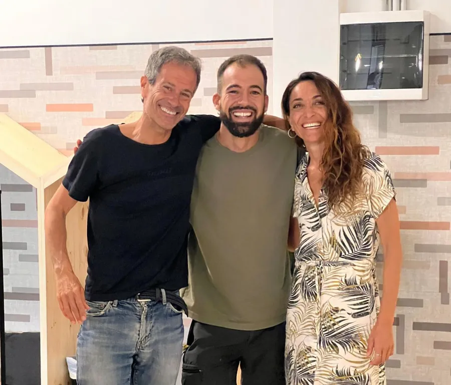
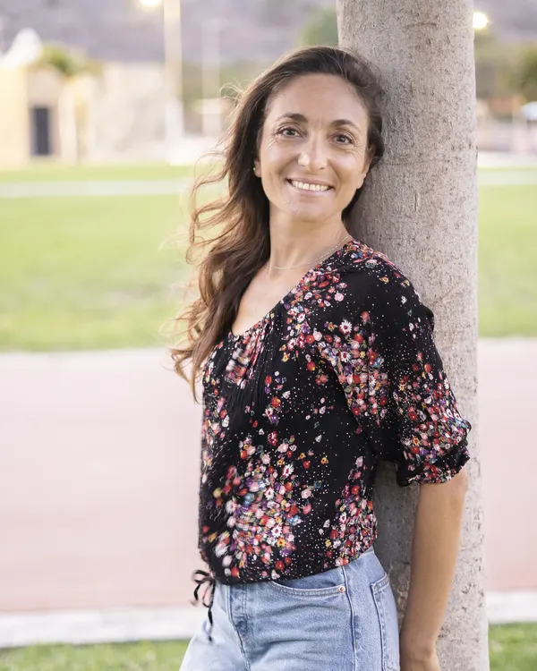
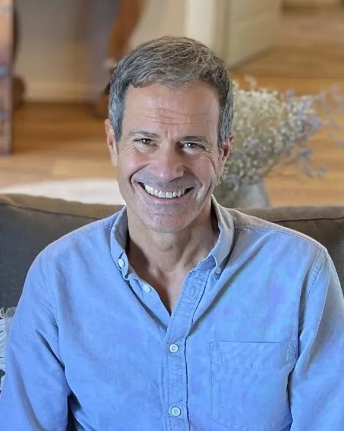

Fondatori
Melania e Miquel

Yoga · Meditazione · Ayurveda
Melania Di Vara
Formatrice di Yoga, Meditazione e Ayurveda, con oltre 10 anni di esperienza nell'accompagnare percorsi di conoscenza di sé e guarigione emozionale.
Vedi profilo · melaniadivara.com
Terapeuta · Life Coach
Miquel Canut
Terapeuta e Life Coach con oltre 18 anni di esperienza, facilitatore del metodo El Monje con Traje (The Suited Monk) di Raf Adams.
Vedi profilo · miquelcanut.comTeam terapeutico
Accompagnamento professionale
SS
Terapeuta specializzato in dipendenze
Sergi Salinas
VF
Psicologa olistica